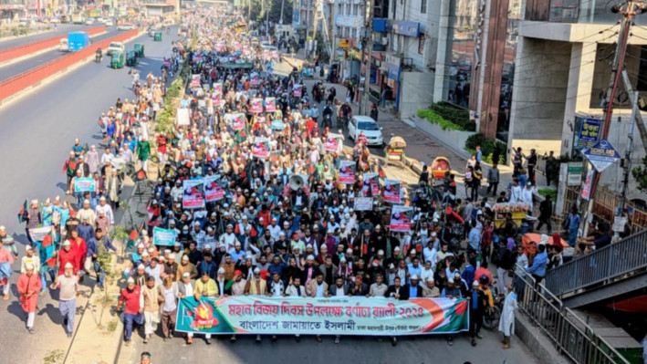

The Daily Star
Jamaat organises grand rally marking Dec 16
Student leaders today reiterated the need for necessary reforms before holding elections. Chief Adviser Prof Muhammad Yunus said today that it may be possible to hold the next national elections at the end of 2025 or the first half of 2026. Reacting to this timeline, top leaders of the Jatiyatabadi Chhatra Dal (JCD), the Anti-Discrimination Students' Movement, and the Bangladesh Students' Union demanded that essential reforms must be visible before the proposed elections. Nasir Uddin Nasir, central general secretary of the JCD, told The Daily Star, "The BNP has not proposed a specific timeline for the elections. However, the ongoing reforms must progress swiftly, and responsibility for governing the country should be handed over to elected representatives as soon as possible through elections. Reform is an ongoing process, and it should continue." Abdul Hannan Masud, chief organizer of the Anti-Discrimination Students' Movement, said, "We view the interim government's electoral timeline positively. Elections should be held as soon as possible. However, we have also demanded a clear roadmap for reforms before setting the election timeline. Perhaps the chief adviser is working on such a roadmap. This roadmap could outline the reforms to be implemented within this timeframe, after which the election will be held. If the election timeline is for late next year or early the following year, so be it. But reforms must precede elections. Elections should only follow after the reforms." Mahir Shahriar Reza, president of the Bangladesh Students' Union, said, "We believe that the existing election system in Bangladesh needs reforms. We have called for the introduction of a proportional representation system, depoliticising the Election Commission, and enacting the Election Commission Act. If the interim government can implement these necessary reforms and hold elections by 2025, we will applaud the effort." He added, "We also believe that prolonged rule by an unelected government is not beneficial for the practice of democracy in the country. Therefore, we want the reforms to be completed swiftly, followed by elections as soon as possible. Reforms should come first, followed by elections."